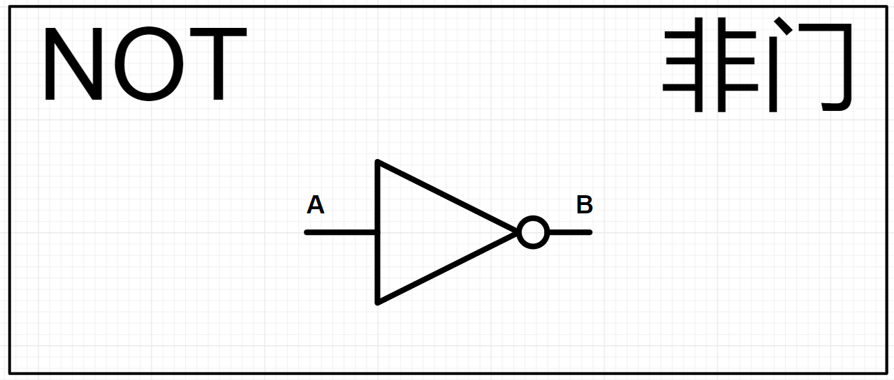
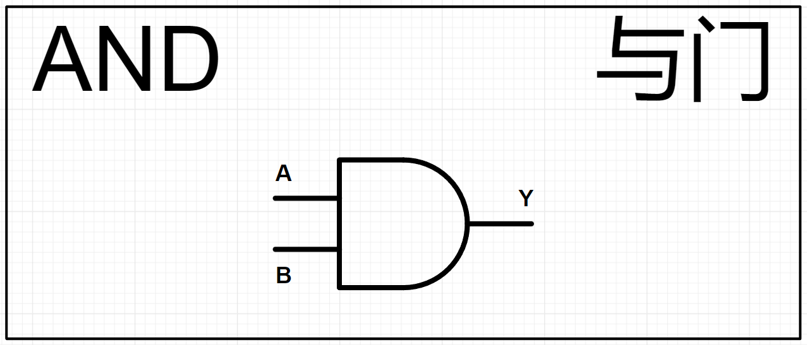
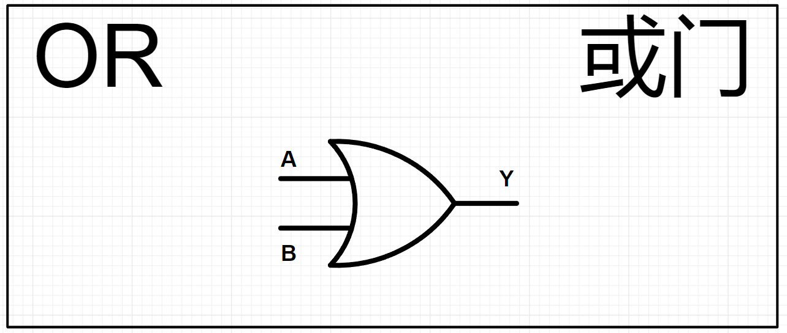
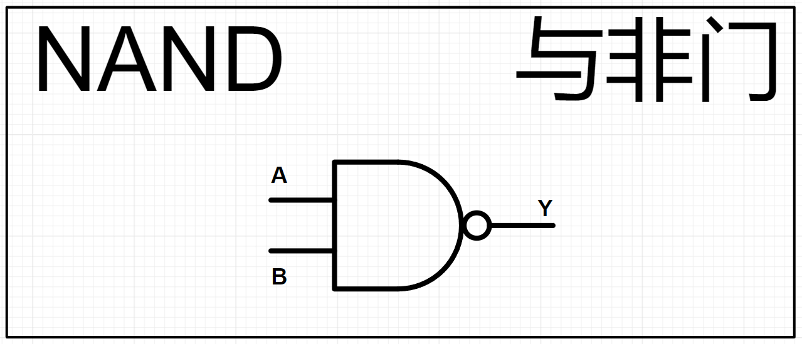
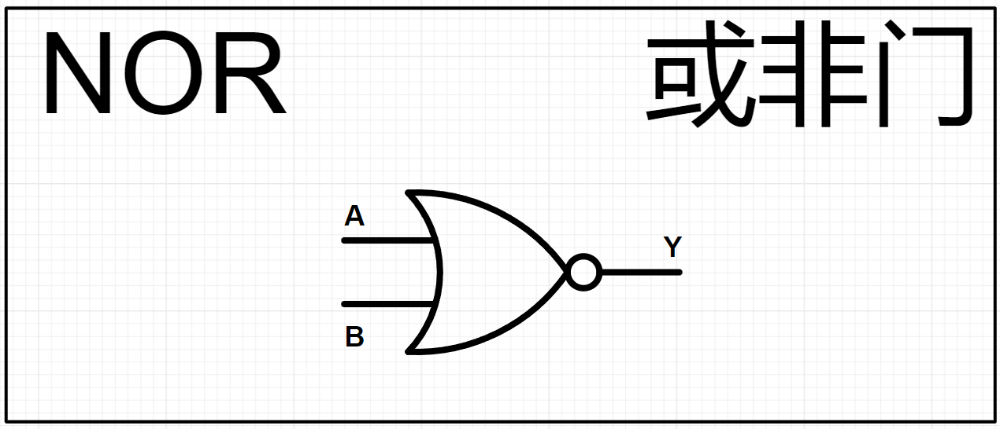
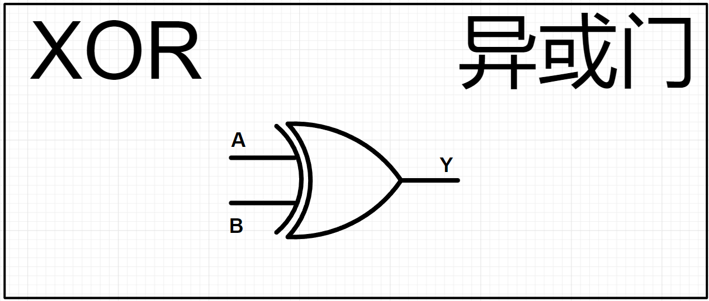
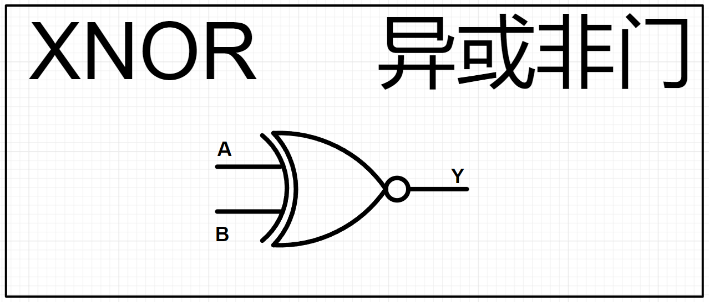

<!DOCTYPE lake>
<h2 data-lake-id="lz57h" id="lz57h"><span data-lake-id="ub69288bc" id="ub69288bc">NOT门电路</span></h2><p data-lake-id="u0c1e86c1" id="u0c1e86c1"><span data-lake-id="u3b81dcef" id="u3b81dcef">NOT（非门）是数字逻辑电路中的一种基本逻辑门，也称为反相器。它执行的是逻辑非操作，即将输入信号取反。NOT门具有一个输入和一个输出。</span></p><p data-lake-id="u74a193e5" id="u74a193e5"></p><p data-lake-id="u19e6a8ed" id="u19e6a8ed"><span data-lake-id="u002162d2" id="u002162d2">A输入，B输出，以下是真值表：</span></p><table class="lake-table" data-lake-id="FS0kJ" id="FS0kJ" margin="true" style="width: 128px" width-mode="contain"><colgroup><col width="61"/><col width="67"/></colgroup><tbody><tr data-lake-id="ub0d281c2" id="ub0d281c2" style="height: 37px"><td data-lake-id="u0967353f" id="u0967353f" style="background-color: #EFF0F0; vertical-align: middle"><p data-lake-id="u6294e3b1" id="u6294e3b1" style="text-align: center"><span data-lake-id="ua73b324c" id="ua73b324c">A</span></p></td><td data-lake-id="u2cdfab95" id="u2cdfab95" style="background-color: #E6DCF9; vertical-align: middle"><p data-lake-id="udbe9de4f" id="udbe9de4f" style="text-align: center"><span data-lake-id="ua4dfcd58" id="ua4dfcd58">B</span></p></td></tr><tr data-lake-id="ue9c06bd0" id="ue9c06bd0"><td data-lake-id="u5a2f9677" id="u5a2f9677" style="vertical-align: middle"><p data-lake-id="udbf3e2c2" id="udbf3e2c2" style="text-align: center"><span data-lake-id="u4dfabd38" id="u4dfabd38">0</span></p></td><td data-lake-id="u1992e894" id="u1992e894" style="background-color: #E6DCF9; vertical-align: middle"><p data-lake-id="u8d9327f3" id="u8d9327f3" style="text-align: center"><span data-lake-id="u69e0ff1d" id="u69e0ff1d">1</span></p></td></tr><tr data-lake-id="u1a6818b6" id="u1a6818b6"><td data-lake-id="u8719273d" id="u8719273d" style="vertical-align: middle"><p data-lake-id="u2584d9e7" id="u2584d9e7" style="text-align: center"><span data-lake-id="ucd32e428" id="ucd32e428">1</span></p></td><td data-lake-id="uf5b96235" id="uf5b96235" style="background-color: #E6DCF9; vertical-align: middle"><p data-lake-id="u93b0d683" id="u93b0d683" style="text-align: center"><span data-lake-id="u507b32e9" id="u507b32e9">0</span></p></td></tr></tbody></table><h2 data-lake-id="IDMGn" id="IDMGn"><span data-lake-id="u631be470" id="u631be470">AND门电路</span></h2><p data-lake-id="uac025f38" id="uac025f38"><span data-lake-id="ua96ba139" id="ua96ba139">AND（与门）是数字逻辑电路中的一种基本逻辑门，用于执行逻辑与操作。AND门具有多个输入和一个输出，它的输出信号取决于所有输入信号的状态。</span></p><p data-lake-id="u179b17ad" id="u179b17ad"></p><p data-lake-id="u3daf82d3" id="u3daf82d3"><span data-lake-id="u0e2f07b3" id="u0e2f07b3">A和B输入，Y输出，以下是真值表：</span></p><table class="lake-table" data-lake-id="iab3q" id="iab3q" margin="true" style="width: 217px" width-mode="contain"><colgroup><col width="76"/><col width="77"/><col width="64"/></colgroup><tbody><tr data-lake-id="ub3bf73d4" id="ub3bf73d4" style="height: 37px"><td data-lake-id="u988df6c1" id="u988df6c1" style="background-color: #E7E9E8; vertical-align: middle"><p data-lake-id="u4d2c014e" id="u4d2c014e" style="text-align: center"><span data-lake-id="u19062d7c" id="u19062d7c">A</span></p></td><td data-lake-id="ubf361fba" id="ubf361fba" style="background-color: #E7E9E8; vertical-align: middle"><p data-lake-id="u5982c71d" id="u5982c71d" style="text-align: center"><span data-lake-id="u0c21f5b5" id="u0c21f5b5">B</span></p></td><td data-lake-id="u629c2e46" id="u629c2e46" style="background-color: #E6DCF9; vertical-align: middle"><p data-lake-id="ud26f94d4" id="ud26f94d4" style="text-align: center"><span data-lake-id="u61bc4405" id="u61bc4405">Y</span></p></td></tr><tr data-lake-id="ua8569f1c" id="ua8569f1c"><td data-lake-id="u32674d10" id="u32674d10" style="vertical-align: middle"><p data-lake-id="u9b0dd83b" id="u9b0dd83b" style="text-align: center"><span data-lake-id="ue31a305f" id="ue31a305f">0</span></p></td><td data-lake-id="u67461805" id="u67461805" style="vertical-align: middle"><p data-lake-id="u3f2130fc" id="u3f2130fc" style="text-align: center"><span data-lake-id="u3479ff5d" id="u3479ff5d">0</span></p></td><td data-lake-id="u514cb9a5" id="u514cb9a5" style="background-color: #E6DCF9; vertical-align: middle"><p data-lake-id="u0e81f2a0" id="u0e81f2a0" style="text-align: center"><span data-lake-id="u78253d7d" id="u78253d7d">0</span></p></td></tr><tr data-lake-id="ub6ec8c75" id="ub6ec8c75"><td data-lake-id="ue1e192ec" id="ue1e192ec" style="vertical-align: middle"><p data-lake-id="u2f525b74" id="u2f525b74" style="text-align: center"><span data-lake-id="u1c60b4dd" id="u1c60b4dd">0</span></p></td><td data-lake-id="uf57c6971" id="uf57c6971" style="vertical-align: middle"><p data-lake-id="u8a1b0cf7" id="u8a1b0cf7" style="text-align: center"><span data-lake-id="uc7b70e42" id="uc7b70e42">1</span></p></td><td data-lake-id="u1acdfd22" id="u1acdfd22" style="background-color: #E6DCF9; vertical-align: middle"><p data-lake-id="u6bd888f4" id="u6bd888f4" style="text-align: center"><span data-lake-id="u9d4c275c" id="u9d4c275c">0</span></p></td></tr><tr data-lake-id="uaf7f337e" id="uaf7f337e"><td data-lake-id="u62b0b3af" id="u62b0b3af" style="vertical-align: middle"><p data-lake-id="u3cfc1ff1" id="u3cfc1ff1" style="text-align: center"><span data-lake-id="u62361223" id="u62361223">1</span></p></td><td data-lake-id="u71216443" id="u71216443" style="vertical-align: middle"><p data-lake-id="uc5583002" id="uc5583002" style="text-align: center"><span data-lake-id="ud67075f9" id="ud67075f9">0</span></p></td><td data-lake-id="uab7981d5" id="uab7981d5" style="background-color: #E6DCF9; vertical-align: middle"><p data-lake-id="u89e12736" id="u89e12736" style="text-align: center"><span data-lake-id="uf04f0753" id="uf04f0753">0</span></p></td></tr><tr data-lake-id="u41ac4217" id="u41ac4217"><td data-lake-id="u82276b8e" id="u82276b8e" style="vertical-align: middle"><p data-lake-id="uef91e966" id="uef91e966" style="text-align: center"><span data-lake-id="udd8221d6" id="udd8221d6">1</span></p></td><td data-lake-id="ubebf39ab" id="ubebf39ab" style="vertical-align: middle"><p data-lake-id="u5f770f73" id="u5f770f73" style="text-align: center"><span data-lake-id="u0a46ce13" id="u0a46ce13">1</span></p></td><td data-lake-id="u65a124cd" id="u65a124cd" style="background-color: #E6DCF9; vertical-align: middle"><p data-lake-id="u173cebed" id="u173cebed" style="text-align: center"><span data-lake-id="u89c9ff7c" id="u89c9ff7c">1</span></p></td></tr></tbody></table><h2 data-lake-id="fIBUJ" id="fIBUJ"><span data-lake-id="u3335d207" id="u3335d207">OR门电路</span></h2><p data-lake-id="u544aedfc" id="u544aedfc"><span data-lake-id="u0c1b26b7" id="u0c1b26b7">OR（或门）是数字逻辑电路中的一种基本逻辑门，用于执行逻辑或操作。OR门具有多个输入和一个输出，它的输出信号取决于所有输入信号的状态。</span></p><p data-lake-id="u9b95933b" id="u9b95933b"></p><p data-lake-id="u56c4205e" id="u56c4205e"><span data-lake-id="u0caa2908" id="u0caa2908">A和B输入，Y输出，以下是真值表：</span></p><table class="lake-table" data-lake-id="fGFDx" id="fGFDx" margin="true" style="width: 217px" width-mode="contain"><colgroup><col width="76"/><col width="77"/><col width="64"/></colgroup><tbody><tr data-lake-id="u83f44771" id="u83f44771" style="height: 37px"><td data-lake-id="ub0395191" id="ub0395191" style="background-color: #E7E9E8; vertical-align: middle"><p data-lake-id="u5507815b" id="u5507815b" style="text-align: center"><span data-lake-id="uf98c502d" id="uf98c502d">A</span></p></td><td data-lake-id="u23f28701" id="u23f28701" style="background-color: #E7E9E8; vertical-align: middle"><p data-lake-id="u2b10e439" id="u2b10e439" style="text-align: center"><span data-lake-id="u8bbf279e" id="u8bbf279e">B</span></p></td><td data-lake-id="ue80a7d31" id="ue80a7d31" style="background-color: #E6DCF9; vertical-align: middle"><p data-lake-id="u69de0178" id="u69de0178" style="text-align: center"><span data-lake-id="uc1a15d82" id="uc1a15d82">Y</span></p></td></tr><tr data-lake-id="u80160cff" id="u80160cff"><td data-lake-id="uc22ec2c7" id="uc22ec2c7" style="vertical-align: middle"><p data-lake-id="u4ed3a435" id="u4ed3a435" style="text-align: center"><span data-lake-id="u04b150ad" id="u04b150ad">0</span></p></td><td data-lake-id="u444d7459" id="u444d7459" style="vertical-align: middle"><p data-lake-id="ub16f6c85" id="ub16f6c85" style="text-align: center"><span data-lake-id="ub7211dc0" id="ub7211dc0">0</span></p></td><td data-lake-id="u05679bd7" id="u05679bd7" style="background-color: #E6DCF9; vertical-align: middle"><p data-lake-id="u72072169" id="u72072169" style="text-align: center"><span data-lake-id="u2bbaa914" id="u2bbaa914">0</span></p></td></tr><tr data-lake-id="u48a2fc80" id="u48a2fc80"><td data-lake-id="u42d33943" id="u42d33943" style="vertical-align: middle"><p data-lake-id="ucac8becf" id="ucac8becf" style="text-align: center"><span data-lake-id="u453b542d" id="u453b542d">0</span></p></td><td data-lake-id="ubb688e32" id="ubb688e32" style="vertical-align: middle"><p data-lake-id="u1fa4721d" id="u1fa4721d" style="text-align: center"><span data-lake-id="u16cb3a7f" id="u16cb3a7f">1</span></p></td><td data-lake-id="ud378e544" id="ud378e544" style="background-color: #E6DCF9; vertical-align: middle"><p data-lake-id="ue27766b0" id="ue27766b0" style="text-align: center"><span data-lake-id="u868d780d" id="u868d780d">1</span></p></td></tr><tr data-lake-id="ua519b182" id="ua519b182"><td data-lake-id="ufc464467" id="ufc464467" style="vertical-align: middle"><p data-lake-id="ud5a0f033" id="ud5a0f033" style="text-align: center"><span data-lake-id="u58bb7752" id="u58bb7752">1</span></p></td><td data-lake-id="uc855d3be" id="uc855d3be" style="vertical-align: middle"><p data-lake-id="u02b20754" id="u02b20754" style="text-align: center"><span data-lake-id="u8e0e0fc7" id="u8e0e0fc7">0</span></p></td><td data-lake-id="uf8845bb7" id="uf8845bb7" style="background-color: #E6DCF9; vertical-align: middle"><p data-lake-id="ud1f4ddb6" id="ud1f4ddb6" style="text-align: center"><span data-lake-id="u6ebce6ec" id="u6ebce6ec">1</span></p></td></tr><tr data-lake-id="uc45dd065" id="uc45dd065"><td data-lake-id="u88d1e9f1" id="u88d1e9f1" style="vertical-align: middle"><p data-lake-id="u374d9d23" id="u374d9d23" style="text-align: center"><span data-lake-id="u9a5e05fc" id="u9a5e05fc">1</span></p></td><td data-lake-id="u038595b3" id="u038595b3" style="vertical-align: middle"><p data-lake-id="ub41eff77" id="ub41eff77" style="text-align: center"><span data-lake-id="ud161fadd" id="ud161fadd">1</span></p></td><td data-lake-id="u9a3a77ff" id="u9a3a77ff" style="background-color: #E6DCF9; vertical-align: middle"><p data-lake-id="uada11f13" id="uada11f13" style="text-align: center"><span data-lake-id="u91aa6ce0" id="u91aa6ce0">1</span></p></td></tr></tbody></table><h2 data-lake-id="rUodP" id="rUodP"><span data-lake-id="u51e738ad" id="u51e738ad">NAND门电路</span></h2><p data-lake-id="u6e6f918a" id="u6e6f918a"><span data-lake-id="uc554cf91" id="uc554cf91">NAND（NOT AND）门，与非门，是一种常见的逻辑门类型，它执行逻辑与（AND）操作的反操作，并具有特殊的性质，被广泛应用于电子和计算机领域。</span></p><p data-lake-id="ua4aab3b1" id="ua4aab3b1"></p><p data-lake-id="ua83dfe2f" id="ua83dfe2f"><span data-lake-id="u5a2f5cf8" id="u5a2f5cf8">A和B输入，Y输出，以下是真值表：</span></p><table class="lake-table" data-lake-id="I0Upa" id="I0Upa" margin="true" style="width: 217px" width-mode="contain"><colgroup><col width="76"/><col width="77"/><col width="64"/></colgroup><tbody><tr data-lake-id="u8204a29c" id="u8204a29c" style="height: 37px"><td data-lake-id="u22ceefae" id="u22ceefae" style="background-color: #E7E9E8; vertical-align: middle"><p data-lake-id="uaadc2781" id="uaadc2781" style="text-align: center"><span data-lake-id="ue507391f" id="ue507391f">A</span></p></td><td data-lake-id="u425a35c7" id="u425a35c7" style="background-color: #E7E9E8; vertical-align: middle"><p data-lake-id="udf322470" id="udf322470" style="text-align: center"><span data-lake-id="uc8367de8" id="uc8367de8">B</span></p></td><td data-lake-id="u24d653e0" id="u24d653e0" style="background-color: #E6DCF9; vertical-align: middle"><p data-lake-id="u6c37751b" id="u6c37751b" style="text-align: center"><span data-lake-id="uc720c915" id="uc720c915">Y</span></p></td></tr><tr data-lake-id="u8a47e2c2" id="u8a47e2c2"><td data-lake-id="u6aebdc05" id="u6aebdc05" style="vertical-align: middle"><p data-lake-id="uae6b6969" id="uae6b6969" style="text-align: center"><span data-lake-id="ua088a356" id="ua088a356">0</span></p></td><td data-lake-id="u0476783b" id="u0476783b" style="vertical-align: middle"><p data-lake-id="ua8446ae9" id="ua8446ae9" style="text-align: center"><span data-lake-id="u9ea4328b" id="u9ea4328b">0</span></p></td><td data-lake-id="u8f7a7969" id="u8f7a7969" style="background-color: #E6DCF9; vertical-align: middle"><p data-lake-id="u695d001c" id="u695d001c" style="text-align: center"><span data-lake-id="u8e318a12" id="u8e318a12">1</span></p></td></tr><tr data-lake-id="u862b1472" id="u862b1472"><td data-lake-id="u48b5f9d6" id="u48b5f9d6" style="vertical-align: middle"><p data-lake-id="ucff489ff" id="ucff489ff" style="text-align: center"><span data-lake-id="ueb96daf6" id="ueb96daf6">0</span></p></td><td data-lake-id="u5d4282b5" id="u5d4282b5" style="vertical-align: middle"><p data-lake-id="u2891b8d5" id="u2891b8d5" style="text-align: center"><span data-lake-id="u6b7d2b5f" id="u6b7d2b5f">1</span></p></td><td data-lake-id="uc9f99a03" id="uc9f99a03" style="background-color: #E6DCF9; vertical-align: middle"><p data-lake-id="ue49f7330" id="ue49f7330" style="text-align: center"><span data-lake-id="uc5736fde" id="uc5736fde">1</span></p></td></tr><tr data-lake-id="udfd880d0" id="udfd880d0"><td data-lake-id="ucccb81af" id="ucccb81af" style="vertical-align: middle"><p data-lake-id="ueee044eb" id="ueee044eb" style="text-align: center"><span data-lake-id="u6fdaa0ff" id="u6fdaa0ff">1</span></p></td><td data-lake-id="ub6fbaa4a" id="ub6fbaa4a" style="vertical-align: middle"><p data-lake-id="u684394aa" id="u684394aa" style="text-align: center"><span data-lake-id="u1c979540" id="u1c979540">0</span></p></td><td data-lake-id="u81424b0b" id="u81424b0b" style="background-color: #E6DCF9; vertical-align: middle"><p data-lake-id="ud78e10a7" id="ud78e10a7" style="text-align: center"><span data-lake-id="ubd8b7364" id="ubd8b7364">1</span></p></td></tr><tr data-lake-id="u487153ba" id="u487153ba"><td data-lake-id="ue856e9b2" id="ue856e9b2" style="vertical-align: middle"><p data-lake-id="uf22ba43a" id="uf22ba43a" style="text-align: center"><span data-lake-id="ubbccef0e" id="ubbccef0e">1</span></p></td><td data-lake-id="ubee01395" id="ubee01395" style="vertical-align: middle"><p data-lake-id="u57dce2e7" id="u57dce2e7" style="text-align: center"><span data-lake-id="u27d24711" id="u27d24711">1</span></p></td><td data-lake-id="u1e1c23c4" id="u1e1c23c4" style="background-color: #E6DCF9; vertical-align: middle"><p data-lake-id="ubfab3ab5" id="ubfab3ab5" style="text-align: center"><span data-lake-id="u544b6ad8" id="u544b6ad8">0</span></p></td></tr></tbody></table><h2 data-lake-id="ZhNZk" id="ZhNZk"><span data-lake-id="u0eb63d7e" id="u0eb63d7e">NOR门电路</span></h2><p data-lake-id="ud23863cc" id="ud23863cc"><span data-lake-id="ub77cf5af" id="ub77cf5af">NOR（NOT OR）门，或非门，是数字电路中的另一种基本逻辑门，它执行逻辑或（OR）操作的反操作。NOR门也被广泛应用于电子和计算机领域，用于构建各种逻辑功能。</span></p><p data-lake-id="u669cb45a" id="u669cb45a"></p><p data-lake-id="u86f06cec" id="u86f06cec"><span data-lake-id="u4bd04ca3" id="u4bd04ca3">A和B输入，Y输出，以下是真值表：</span></p><table class="lake-table" data-lake-id="QmdzQ" id="QmdzQ" margin="true" style="width: 217px"><colgroup><col width="76"/><col width="77"/><col width="64"/></colgroup><tbody><tr data-lake-id="u81fc7e4f" id="u81fc7e4f" style="height: 37px"><td data-lake-id="ue735e4ba" id="ue735e4ba" style="background-color: #E7E9E8; vertical-align: middle"><p data-lake-id="u4ffaf900" id="u4ffaf900" style="text-align: center"><span data-lake-id="u68e2fcbf" id="u68e2fcbf">A</span></p></td><td data-lake-id="u3ca5ebda" id="u3ca5ebda" style="background-color: #E7E9E8; vertical-align: middle"><p data-lake-id="u0f96fbb2" id="u0f96fbb2" style="text-align: center"><span data-lake-id="u0f49d8c3" id="u0f49d8c3">B</span></p></td><td data-lake-id="u5b85c815" id="u5b85c815" style="background-color: #E6DCF9; vertical-align: middle"><p data-lake-id="u2fcf3036" id="u2fcf3036" style="text-align: center"><span data-lake-id="u8664a0f6" id="u8664a0f6">Y</span></p></td></tr><tr data-lake-id="uac3d0cf8" id="uac3d0cf8"><td data-lake-id="ua9bfbc24" id="ua9bfbc24" style="vertical-align: middle"><p data-lake-id="u3a75ec60" id="u3a75ec60" style="text-align: center"><span data-lake-id="u0e509f7b" id="u0e509f7b">0</span></p></td><td data-lake-id="uc3e413e0" id="uc3e413e0" style="vertical-align: middle"><p data-lake-id="u8443e3d2" id="u8443e3d2" style="text-align: center"><span data-lake-id="ud79636c6" id="ud79636c6">0</span></p></td><td data-lake-id="u2bc44b26" id="u2bc44b26" style="background-color: #E6DCF9; vertical-align: middle"><p data-lake-id="u19edb0e8" id="u19edb0e8" style="text-align: center"><span data-lake-id="uac129589" id="uac129589">1</span></p></td></tr><tr data-lake-id="u338cc21b" id="u338cc21b"><td data-lake-id="u79bbdeeb" id="u79bbdeeb" style="vertical-align: middle"><p data-lake-id="ue1806e26" id="ue1806e26" style="text-align: center"><span data-lake-id="ud91b264f" id="ud91b264f">0</span></p></td><td data-lake-id="u73fb6a0f" id="u73fb6a0f" style="vertical-align: middle"><p data-lake-id="ua78171b0" id="ua78171b0" style="text-align: center"><span data-lake-id="u7c4d1389" id="u7c4d1389">1</span></p></td><td data-lake-id="u55b4957d" id="u55b4957d" style="background-color: #E6DCF9; vertical-align: middle"><p data-lake-id="u0c92b1d7" id="u0c92b1d7" style="text-align: center"><span data-lake-id="u3c93797f" id="u3c93797f">0</span></p></td></tr><tr data-lake-id="ufb25686f" id="ufb25686f"><td data-lake-id="udc51a551" id="udc51a551" style="vertical-align: middle"><p data-lake-id="ud1b5b343" id="ud1b5b343" style="text-align: center"><span data-lake-id="ua717444d" id="ua717444d">1</span></p></td><td data-lake-id="u4f4db28a" id="u4f4db28a" style="vertical-align: middle"><p data-lake-id="uca1eff54" id="uca1eff54" style="text-align: center"><span data-lake-id="uac583c35" id="uac583c35">0</span></p></td><td data-lake-id="ubdce70f0" id="ubdce70f0" style="background-color: #E6DCF9; vertical-align: middle"><p data-lake-id="uccca6201" id="uccca6201" style="text-align: center"><span data-lake-id="u2ffe308f" id="u2ffe308f">0</span></p></td></tr><tr data-lake-id="u3e2a1ad0" id="u3e2a1ad0"><td data-lake-id="u8c06c378" id="u8c06c378" style="vertical-align: middle"><p data-lake-id="u06df2bb1" id="u06df2bb1" style="text-align: center"><span data-lake-id="uaa61c1c8" id="uaa61c1c8">1</span></p></td><td data-lake-id="uc140d710" id="uc140d710" style="vertical-align: middle"><p data-lake-id="u37857c77" id="u37857c77" style="text-align: center"><span data-lake-id="u4abf4b9b" id="u4abf4b9b">1</span></p></td><td data-lake-id="ued71a8c1" id="ued71a8c1" style="background-color: #E6DCF9; vertical-align: middle"><p data-lake-id="u3eae440b" id="u3eae440b" style="text-align: center"><span data-lake-id="uf64c8f08" id="uf64c8f08">0</span></p></td></tr></tbody></table><p data-lake-id="u9aa46974" id="u9aa46974"><br/></p><h2 data-lake-id="jfspG" id="jfspG"><span data-lake-id="ucb184c1d" id="ucb184c1d">XOR门电路</span></h2><p data-lake-id="u4129f2dc" id="u4129f2dc"><span data-lake-id="u795c81ed" id="u795c81ed">XOR（异或门）是数字逻辑电路中的一种基本逻辑门，用于执行逻辑异或操作。异或操作是指当输入的两个信号不相同时，输出为高电平（逻辑1）；当输入的两个信号相同时，输出为低电平（逻辑0）。XOR门具有两个输入和一个输出。</span></p><p data-lake-id="uf84b4d7d" id="uf84b4d7d"></p><p data-lake-id="u1bb8020a" id="u1bb8020a"><span data-lake-id="u9404a7e2" id="u9404a7e2">A和B输入，Y输出，以下是真值表：</span></p><table class="lake-table" data-lake-id="ZjSZy" id="ZjSZy" margin="true" style="width: 217px"><colgroup><col width="76"/><col width="77"/><col width="64"/></colgroup><tbody><tr data-lake-id="u4e77f441" id="u4e77f441" style="height: 37px"><td data-lake-id="ud7c5d8a9" id="ud7c5d8a9" style="background-color: #E7E9E8; vertical-align: middle"><p data-lake-id="ub59723d3" id="ub59723d3" style="text-align: center"><span data-lake-id="u2f860aff" id="u2f860aff">A</span></p></td><td data-lake-id="ue807de07" id="ue807de07" style="background-color: #E7E9E8; vertical-align: middle"><p data-lake-id="u6861df7c" id="u6861df7c" style="text-align: center"><span data-lake-id="u3f2a2888" id="u3f2a2888">B</span></p></td><td data-lake-id="u86ccecf6" id="u86ccecf6" style="background-color: #E6DCF9; vertical-align: middle"><p data-lake-id="u21b64a62" id="u21b64a62" style="text-align: center"><span data-lake-id="u1bf409fd" id="u1bf409fd">Y</span></p></td></tr><tr data-lake-id="ud8a7e0ee" id="ud8a7e0ee"><td data-lake-id="u613d1945" id="u613d1945" style="vertical-align: middle"><p data-lake-id="u08608cda" id="u08608cda" style="text-align: center"><span data-lake-id="ue12968e4" id="ue12968e4">0</span></p></td><td data-lake-id="u65c56046" id="u65c56046" style="vertical-align: middle"><p data-lake-id="u3417ba8a" id="u3417ba8a" style="text-align: center"><span data-lake-id="uaba705c7" id="uaba705c7">0</span></p></td><td data-lake-id="u1b7445af" id="u1b7445af" style="background-color: #E6DCF9; vertical-align: middle"><p data-lake-id="u0ae10fcc" id="u0ae10fcc" style="text-align: center"><span data-lake-id="u0d935b0a" id="u0d935b0a">0</span></p></td></tr><tr data-lake-id="u0edf23af" id="u0edf23af"><td data-lake-id="u0ae45626" id="u0ae45626" style="vertical-align: middle"><p data-lake-id="u3f118cbd" id="u3f118cbd" style="text-align: center"><span data-lake-id="ub2b47808" id="ub2b47808">0</span></p></td><td data-lake-id="u282011b0" id="u282011b0" style="vertical-align: middle"><p data-lake-id="u3d436a30" id="u3d436a30" style="text-align: center"><span data-lake-id="ud6335bd3" id="ud6335bd3">1</span></p></td><td data-lake-id="u07a1ac16" id="u07a1ac16" style="background-color: #E6DCF9; vertical-align: middle"><p data-lake-id="u2f44d71c" id="u2f44d71c" style="text-align: center"><span data-lake-id="u719ebb12" id="u719ebb12">1</span></p></td></tr><tr data-lake-id="ubbcae5c1" id="ubbcae5c1"><td data-lake-id="uf2e55167" id="uf2e55167" style="vertical-align: middle"><p data-lake-id="ud7e61b0b" id="ud7e61b0b" style="text-align: center"><span data-lake-id="uc66cc005" id="uc66cc005">1</span></p></td><td data-lake-id="ucbda6914" id="ucbda6914" style="vertical-align: middle"><p data-lake-id="u398fcdf0" id="u398fcdf0" style="text-align: center"><span data-lake-id="u27bc86c0" id="u27bc86c0">0</span></p></td><td data-lake-id="u57358568" id="u57358568" style="background-color: #E6DCF9; vertical-align: middle"><p data-lake-id="u687ff4d6" id="u687ff4d6" style="text-align: center"><span data-lake-id="u89706303" id="u89706303">1</span></p></td></tr><tr data-lake-id="u653cc05e" id="u653cc05e"><td data-lake-id="ud0acd8df" id="ud0acd8df" style="vertical-align: middle"><p data-lake-id="u493a1f4d" id="u493a1f4d" style="text-align: center"><span data-lake-id="uf9cd407d" id="uf9cd407d">1</span></p></td><td data-lake-id="ucb026da0" id="ucb026da0" style="vertical-align: middle"><p data-lake-id="u2054b957" id="u2054b957" style="text-align: center"><span data-lake-id="u68589e64" id="u68589e64">1</span></p></td><td data-lake-id="u6c004623" id="u6c004623" style="background-color: #E6DCF9; vertical-align: middle"><p data-lake-id="ucaff5e39" id="ucaff5e39" style="text-align: center"><span data-lake-id="uc42cf859" id="uc42cf859">0</span></p></td></tr></tbody></table><h2 data-lake-id="nv1TB" id="nv1TB"><span data-lake-id="u84b89290" id="u84b89290">XNOR门电路</span></h2><p data-lake-id="u356b4b91" id="u356b4b91"><span data-lake-id="u3b62baef" id="u3b62baef">XNOR（异或非门）是数字逻辑电路中的一种基本逻辑门，是异或门（XOR门）的补充。XNOR门执行逻辑异或操作的反操作，也称为等价门。XNOR门具有两个输入和一个输出，用于比较两个输入信号是否相等。</span></p><p data-lake-id="u0af0d010" id="u0af0d010"></p><p data-lake-id="u5809d9a4" id="u5809d9a4"><span data-lake-id="u690576e1" id="u690576e1">A和B输入，Y输出，以下是真值表：</span></p><table class="lake-table" data-lake-id="JlO4C" id="JlO4C" margin="true" style="width: 217px"><colgroup><col width="76"/><col width="77"/><col width="64"/></colgroup><tbody><tr data-lake-id="u8c6c42c7" id="u8c6c42c7" style="height: 37px"><td data-lake-id="ud6cb037a" id="ud6cb037a" style="background-color: #E7E9E8; vertical-align: middle"><p data-lake-id="u4a732ba9" id="u4a732ba9" style="text-align: center"><span data-lake-id="u354baf90" id="u354baf90">A</span></p></td><td data-lake-id="uf03daee8" id="uf03daee8" style="background-color: #E7E9E8; vertical-align: middle"><p data-lake-id="u6b72803c" id="u6b72803c" style="text-align: center"><span data-lake-id="ub98fb4d9" id="ub98fb4d9">B</span></p></td><td data-lake-id="u278e6b4b" id="u278e6b4b" style="background-color: #E6DCF9; vertical-align: middle"><p data-lake-id="u35e8d817" id="u35e8d817" style="text-align: center"><span data-lake-id="u6e89a89f" id="u6e89a89f">Y</span></p></td></tr><tr data-lake-id="ub54e6942" id="ub54e6942"><td data-lake-id="u1e84cf9c" id="u1e84cf9c" style="vertical-align: middle"><p data-lake-id="u878804b7" id="u878804b7" style="text-align: center"><span data-lake-id="ua072ebbb" id="ua072ebbb">0</span></p></td><td data-lake-id="uac1b9ef5" id="uac1b9ef5" style="vertical-align: middle"><p data-lake-id="u11792306" id="u11792306" style="text-align: center"><span data-lake-id="uad11cefe" id="uad11cefe">0</span></p></td><td data-lake-id="uc0f720ae" id="uc0f720ae" style="background-color: #E6DCF9; vertical-align: middle"><p data-lake-id="ue7cb6a34" id="ue7cb6a34" style="text-align: center"><span data-lake-id="u1cdcac2f" id="u1cdcac2f">1</span></p></td></tr><tr data-lake-id="u8cb0c804" id="u8cb0c804"><td data-lake-id="u3bd400d4" id="u3bd400d4" style="vertical-align: middle"><p data-lake-id="ub74a8873" id="ub74a8873" style="text-align: center"><span data-lake-id="u41e51a6a" id="u41e51a6a">0</span></p></td><td data-lake-id="u5674c290" id="u5674c290" style="vertical-align: middle"><p data-lake-id="u79a654b9" id="u79a654b9" style="text-align: center"><span data-lake-id="u9e0e7291" id="u9e0e7291">1</span></p></td><td data-lake-id="u5882da7d" id="u5882da7d" style="background-color: #E6DCF9; vertical-align: middle"><p data-lake-id="uf9f30190" id="uf9f30190" style="text-align: center"><span data-lake-id="u0476af4c" id="u0476af4c">0</span></p></td></tr><tr data-lake-id="uc862c91e" id="uc862c91e"><td data-lake-id="u65d9de34" id="u65d9de34" style="vertical-align: middle"><p data-lake-id="u0de524d5" id="u0de524d5" style="text-align: center"><span data-lake-id="u444779c9" id="u444779c9">1</span></p></td><td data-lake-id="ub9de57ce" id="ub9de57ce" style="vertical-align: middle"><p data-lake-id="ued760a74" id="ued760a74" style="text-align: center"><span data-lake-id="u52320809" id="u52320809">0</span></p></td><td data-lake-id="u4c9e517c" id="u4c9e517c" style="background-color: #E6DCF9; vertical-align: middle"><p data-lake-id="uc29d85f1" id="uc29d85f1" style="text-align: center"><span data-lake-id="u652ae25a" id="u652ae25a">0</span></p></td></tr><tr data-lake-id="u52fca774" id="u52fca774"><td data-lake-id="u7ecb626b" id="u7ecb626b" style="vertical-align: middle"><p data-lake-id="ub6f8b29f" id="ub6f8b29f" style="text-align: center"><span data-lake-id="u14f9a309" id="u14f9a309">1</span></p></td><td data-lake-id="ue5657f4a" id="ue5657f4a" style="vertical-align: middle"><p data-lake-id="u7863d2c1" id="u7863d2c1" style="text-align: center"><span data-lake-id="uf0484a5f" id="uf0484a5f">1</span></p></td><td data-lake-id="u1ef9a540" id="u1ef9a540" style="background-color: #E6DCF9; vertical-align: middle"><p data-lake-id="ue71daba2" id="ue71daba2" style="text-align: center"><span data-lake-id="ud6283098" id="ud6283098">1</span></p></td></tr></tbody></table>